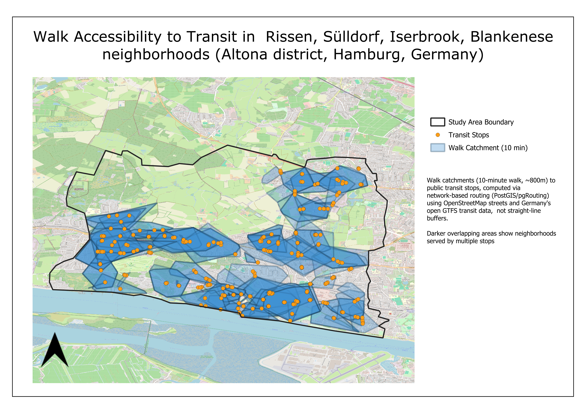

Solar Park Suitability Analysis, Wetteraukreis & Vogelsbergkreis (Hesse)
GIS suitability analysis for ground-mounted solar parks across two Hesse districts. Built with ArcGIS Pro and Python (GeoPandas, Shapely), with an interactive web map of the 197 scored sites.
view_project →
Solar Energy Potential on Roof Surfaces — Breuberg, Hesse
GIS analysis estimating rooftop solar PV potential across Breuberg, Hesse, using OpenStreetMap building footprints and PVGIS satellite radiation data in ArcGIS Pro.
view_project →
Energy Performance Analysis of Berliner Allee "LAB" Student Residence
PVGIS-based building energy assessment evaluating envelope thermal performance, seasonal solar gains, and rooftop PV potential for a TU Darmstadt student housing block.
view_project →
Automated Population Analysis with ModelBuilder
Automated population analysis across German federal states using ArcGIS ModelBuilder, calculating and mapping each city's share of its state's total population.
view_project →
Transit Walk Accessibility Analysis — Hamburg-Altona
Network-based 10-minute walk catchments to S-Bahn and bus stops along Hamburg's S1 line, computed with pgRouting on OSM streets and Germany's open GTFS feed.
view_project →